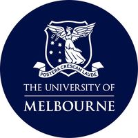
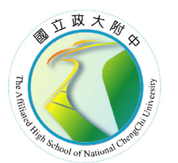
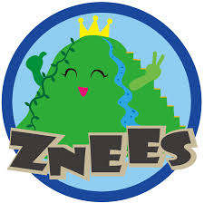

The University of Melbourne
墨爾本大學
2022 - 2024
Master of Mechatronics Engineering (with Distinction)
Click to see more below
國立台灣大學
National Taiwan University
2017 - 2022
Bachelor of Science (Mechanical Engineering)
I made a lot of great friends here!
Click to see more below

政大附中(高中部)
The Affiliated High School of National Chengchi University (AHSNCCU)
2014 - 2017
High School: Science and Mathematics Focus (level 10-12)
Class: 106 - 126
政大附中(國中部)
The Affiliated High School of National Chengchi University (AHSNCCU)
2011 - 2014
Junior High School: General Education (level 7-9)
導師: 張彥勝 老師
Class: 074 - 094

指南國小
Taipei Zhinan Experimental Elementary School
2005 - 2011
Elementary School: Primary Education
指南山的放山雞